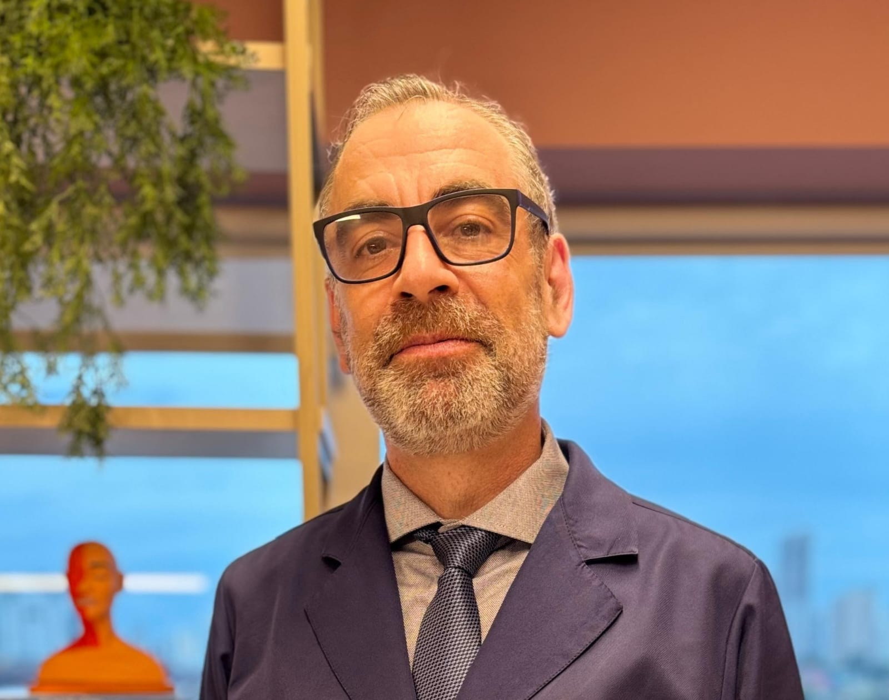

Avaliação especializada em dor de cabeça crônica, enxaqueca, neuralgia do trigêmeo e cefaleias de difícil controle — integração direta entre diagnóstico e tratamento.
Mestrado · University of Nebraska Medical Center
CREMEB 15.169 · RQE 8127 · RQE Dor 22317
Atendimento em dois centros especializados de neurologia em Salvador. Selecione seu plano de saúde para visualizar onde pode ser atendido.
Neurologista com dedicação exclusiva ao diagnóstico e tratamento de cefaleias e síndromes dolorosas craniofaciais. Atuação concentrada nos casos de maior complexidade, com capacidade para integrar avaliação clínica rigorosa e procedimentos intervencionistas em um único centro de cuidado.
Atua na Neuroliv — Clínica de Neurologia, Coluna e Dor — e no INB Neurologia, em Salvador, com agenda voltada predominantemente a pacientes com dor de cabeça crônica e cefaleias de difícil controle.
Mestrado pela University of Nebraska Medical Center.
Avaliação especializada no espectro completo das cefaleias primárias e secundárias, incluindo casos de dor de cabeça crônica de difícil controle.
Com ou sem aura, episódica ou crônica, com ou sem uso excessivo de medicação
Avaliação de cefaleias de alta frequência (mais de 15 dias/mês), incluindo abuso de analgésicos
Diagnóstico e tratamento abortivo e preventivo das cefaleias trigeminoautonômicas
Dor facial paroxística intensa, com avaliação para procedimento intervencionista quando indicado
Dor na região occipital com irradiação, incluindo avaliação para bloqueio nervoso
Dor de cabeça de origem cervical com referência para avaliação intervencionista
Investigação de síndromes dolorosas faciais de difícil diagnóstico ou classificação
Dor neuropática persistente após herpes zoster craniofacial
Reavaliação diagnóstica para pacientes sem resposta satisfatória ao tratamento atual
É comum receber pacientes que já passaram por múltiplas consultas e tratamentos sem obter melhora adequada. Nesses casos, uma revisão diagnóstica criteriosa frequentemente permite identificar possibilidades terapêuticas ainda não exploradas — incluindo procedimentos intervencionistas que não costumam ser oferecidos em avaliações de rotina.
Se a sua dor de cabeça persiste apesar de tratamentos anteriores, uma avaliação especializada em cefaleias pode abrir caminhos que ainda não foram considerados.
Solicitar avaliaçãoToda a expertise concentrada em cefaleias e dores craniofaciais, sem dispersão em outras subespecialidades.
Investigação clínica rigorosa com aplicação da Classificação Internacional de Cefaleias e critérios diagnósticos atualizados.
Estratégia construída para cada caso, considerando histórico, comorbidades e resposta prévia a tratamentos.
Farmacoterapia de ponta combinada com procedimentos minimamente invasivos em um único centro de cuidado.
Mestrado pela University of Nebraska Medical Center, com formação baseada em evidências de excelência científica.
Disponível pela rede de planos de saúde e em consultas particulares, em dois locais em Salvador.
Pronto para uma avaliação
especializada em cefaleias?
Técnicas minimamente invasivas integradas ao plano clínico, com indicação criteriosa e respaldo em evidências científicas.
Qual procedimento é indicado
para o seu caso?
Próximo passo
Diagnóstico especializado em cefaleias. Plano terapêutico construído para o seu caso.
Agendar pelo WhatsApp